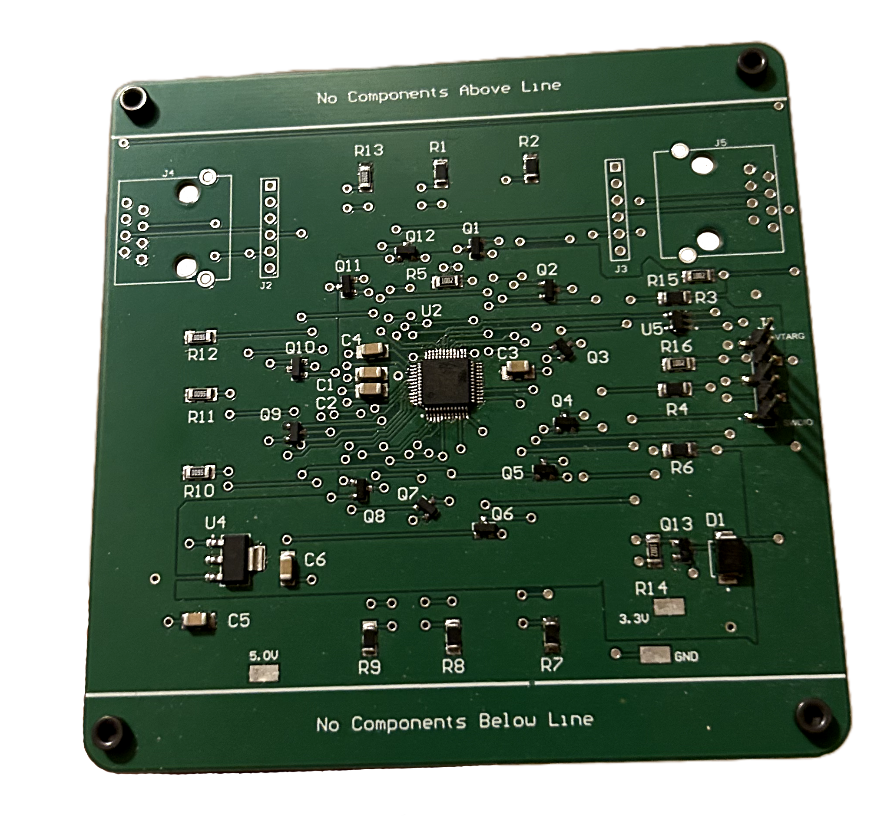
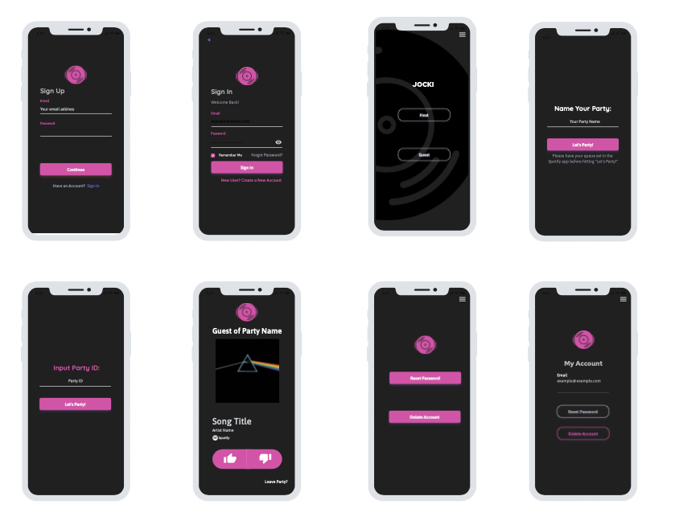

Computer Engineering Projects
FourSights Smart Glasses
Designed and implemented an embedded smart glasses system for visual assistance, integrating a Raspberry Pi 5 and PSoC 6 to support real-time OCR and text-to-speech functionality. Developed and validated firmware on the CY8PROTO-063-BLE, enabling reliable interfacing with IMU, ultrasonic, light, and capacitive touch sensors. As part of the microprocessor design team, contributed to a solution aimed at improving accessibility for visually impaired users, earning the Best Overall Project – Alumni Decision award.
Neuron
Designed and implemented a simplified neuron for a binary activity classifier in Cadence using ReLU activation. Developed the logic-gate level schematic, symbol, and layout, optimizing the design and verifying functionality through LVS and DRC checks.
MIPS Processor
Designed and implemented MIPS-like processors in Verilog, spanning single-cycle, multi-cycle, and five-stage pipelined architectures. To improve memory performance, integrated both direct-mapped and two-way set-associative caches. Verified correct functionality and post-synthesis timing using Synopsys Design Compiler and static timing analysis, ensuring reliable operation and timing closure.
View CodeLogic Analyzer
Developed Verilog modules and testbenches for a logic analyzer project, ensuring accurate data acquisition and processing. Collaborated with team members to integrate Verilog modules, conducted synthesis, and post-synthesis optimizations to meet FPGA hardware specifications, ensuring compatibility and enhancing design efficiency for a high-performance logic analyzer solution.
View CodeMicroprocessor Llama Game
Designed and developed a two-player game using C and FreeRTOS on a PSoC ARM-Cortex Microcontroller. Implemented and debugged software for peripherals (I2C, SPI, UART) and hardware interfaces.
View Code
Custom PCB
Created schematic symbols, PCB footprints, assembled a custom PCB, and programmed embedded firmware using Altium Designer.
Automatic Lock Prototype
Prototyped an automatic lock by creating a circuit with a breadboard including LEDs, Push Buttons and motors. Developed and programmed software using an Arduino. Implemented designs of individual circuit diagram schematic and flow chart.
Computer Science Projects
Retail Color Picker
Developed a Retail Color Picker application using classical computer vision techniques to automatically segment and recolor clothing in images for enhanced online retail visualization. Implemented a hybrid K-Means and GrabCut segmentation pipeline with HSV-based color transformation to preserve garment texture, shading, and logos while enabling real-time interaction through a custom graphical user interface.
View CodeAsteroid Field
Created a 3D Asteroids-inspired space runner using Three.js, where players pilot a spaceship to dodge obstacles, shoot targets, and rack up points. Built dynamic animations including rotating obstacles, particle explosions, and a starry background to bring the game world to life. Developed an automated system for infinite obstacle spawning with random sizes, speeds, and rotations, along with scaling difficulty and toggleable game modes for a smooth and engaging gameplay experience.
View Code
Jocki (Mobile App)
Developed a music party app using React Native and Tailwind CSS for iOS platforms, optimizing UI/UX and integrating native modules for enhanced functionality.
C Sudoku Solver
Developed a Sudoku Solver in C using the Siamese method, integrating advanced data structures and efficient file handling for optimal puzzle solving.
View CodeSkyLink (Flight Path Optimization)
Implemented Dijkstra’s algorithm in Java for optimal flight path computation, with a JavaFX GUI for user interaction and rigorous testing using JUnit.